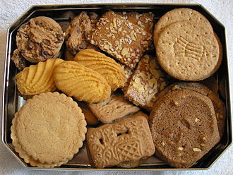

Een koekje of biscuit (van het Frans bis en cuit, "tweemaal gebakken"; vgl. beschuit) is een kleine, gebakken lekkernij die bij de koffie, thee of een drankje wordt gegeten. Vroeger werden koekjes vooral door de banketbakker gebakken. Tegenwoordig is de productie grootschaliger en worden ze meestal verkocht in supermarkten. Veel mensen vinden het leuk om af en toe zelf koekjes te bakken. Roomboterkoekjes zijn bereid met roomboter in plaats van andere vetten.
De term koekje wordt soms ook gebruikt voor kleine gerechten die in een koekenpan worden gebakken, zoals rijstekoekjes, aardappelkoekjes of viskoekjes.
